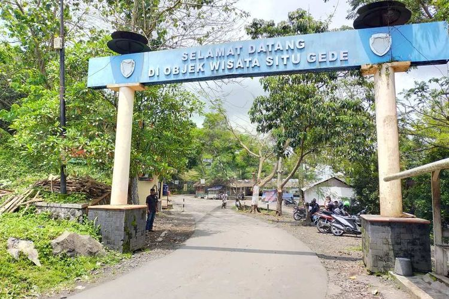

Wisata
1. Situ Gede
Situ Gede menawarkan keindahan pemandangan danau yang membentang luas. Selain itu, melihat sekeliling kawasannya, terlihat ada pohon-pohon yang masih rimbun. Pepohonan tersebut yang membuat udara di sekitarnya tidak terasa panas. Hal ini yang membuat daya tarik tersendiri bagi pengunjung untuk datang. Wisatawan akan merasakan kesejukan jika berkunjung ke Situ Gede. Kamu bisa menikmati duduk-duduk santai di gazebo yang disediakan, atau menikmati santapan kuliner khas Tasikmalaya. Ada menu andalan di tempat ini yang bisa kamu coba yaitu olahan ikan segar. Selain itu ditambah dengan minuman kelapa muda yang menyegarkan.
a. Naik perahu keliling danau
Selain bersantai menikmati pemandangan pinggir danau, kamu tentu bisa masuk ke dalam danau dan berkeliling menggunakan perahu.
Ada banyak perahu wisata yang disediakan pengelola wisata. Wahana ini dapat kamu nikmati bersama keluarga. Untuk merasakan sensasi naik perahu dan mengelilingi danau seluas 47 hektar berkedalaman 6 meter ini, kamu cukup merogoh kocek Rp 10.000 per orang.
b. Mengadakan camping ground
Situ Gede juga bisa dijadikan tempat untuk camping atau mendirikan tenda. Wisatawan bisa bermalam di kawasan ini dengan menyewa tenda-tenda yang dijajakan.
Tak perlu khawatir soal toilet dan kamar mandi, tempat ini sudah memiliki fasilitas dasar tempat wisata seperti toilet atau Mandi Cuci Kakus (MCK).
bisa berkemah menikmati suasana pedesaan di Situ Gede yang sejuk dan segar. Malamnya, kamu bisa menikmati makan ikan bakar yang dijual penduduk sekitar.
c. Akses ke Situ Gede
Tertarik berkunjung ke Situ Gede? Kamu cukup berkendara selama 30 menit dari kota Tasikmalaya. Akses jalan terbilang mudah dan ada papan plang tempat wisata Situ Gede. Lokasinya berada di Kecamatan Mangkubumi, Kota Tasikmalaya, Jawa Barat.
d. Harga tiket masuk Situ Gede
Untuk harga tiket masuknya, cukup sediakan uang Rp 5.000 per orang untuk dapat berwisata ke Situ Gede.
Sementara untuk menyewa perahu, kamu akan membayar biaya tambahan Rp 10.000 per orang.
Jika ingin berkunjung taati protokol kesehatan dengan memakai masker, jaga jarak minimal satu meter, gunakan hand sanitizer dan rajin mencuci tangan, serta pastikan suhu tubuh normal di bawah 37,3 derajat celcius.
(Sumber : https://travel.kompas.com/)